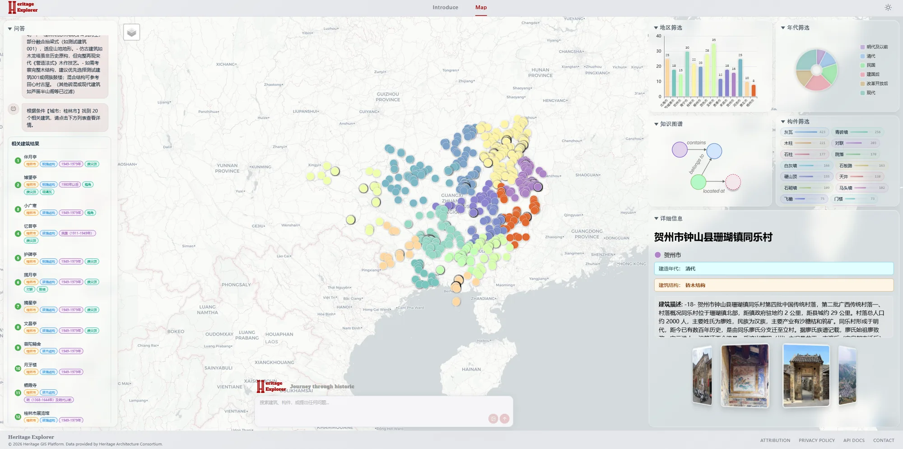
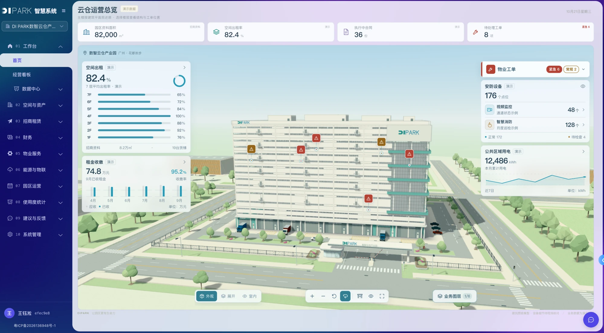
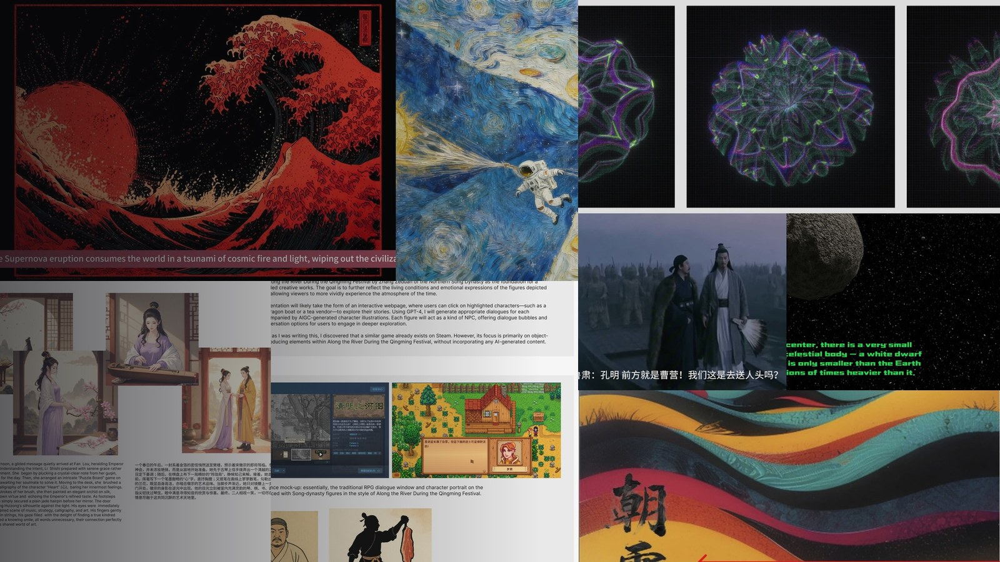

ARCHITECTUREFIG.002
地图入口 · 图谱大脑Map entry · graph brain
Vue 3 + Mars2D 前端，FastAPI 路由，Neo4j 存储建筑、构件、城市与年代关系。Vue 3 + Mars2D front end, FastAPI router, Neo4j relations across buildings, components, cities, and eras.
香港科技大学（广州）计算媒体与艺术 MPhil，前中科院上海微系统所嵌入式工程师。关注 GIS 可视化、知识图谱、多模态检索与文化遗产计算；2026 年起以 Claude Code / Codex 多 Agent 协作，独立交付了 15 个企业业务系统和一套 LLM 网关。 MPhil student in Computational Media & Arts at HKUST(GZ), formerly an embedded engineer at CAS SIMIT. I work across GIS visualization, knowledge graphs, multimodal retrieval, and computational heritage. Since 2026 I have used Claude Code / Codex multi-agent workflows to ship 15 business systems and an in-house LLM gateway on my own.
电气工程及其自动化；参与智慧农业、光伏运维等互联网+项目。Electrical engineering; Internet+ projects in smart agriculture and PV O&M.
无线水压表、LoRa 测力、消防感知；从原理图到固件和现场部署。参与标准起草。Wireless meters, LoRa sensors, fire-safety devices from schematic to field deployment. Co-authored industry standards.
HeritageExplorer 投稿 VINCI 2025；合作 GenColor CHI 2025。HeritageExplorer for VINCI 2025; co-authored GenColor at CHI 2025.
扩展至广西历史建筑数据；搭建 Vue 3、FastAPI、Neo4j、多通路 RAG。Scaled to Guangxi heritage data with Vue 3, FastAPI, Neo4j, and multi-lane RAG.
以 Coding Agent 为主力，交付园区、ERP、财务、人资、运维与 LLM 网关等 15 个系统。With coding agents doing most of the typing, shipped 15 systems — park ops, ERP, finance, HR, monitoring and an LLM gateway.
广西历史建筑多模态 GIS 平台。前端 Vue 3 + Mars2D，后端 FastAPI + Neo4j，一键 Docker Compose。14 个城市、2,036 处建筑、9,636 个构件 — 可看、可搜、可对话。 A multimodal GIS platform for Guangxi heritage. Vue 3 + Mars2D on the front, FastAPI + Neo4j on the back, single Docker Compose. 14 cities, 2,036 buildings, 9,636 components — visible, searchable, conversational.

Vue 3 + Mars2D 前端，FastAPI 路由，Neo4j 存储建筑、构件、城市与年代关系。Vue 3 + Mars2D front end, FastAPI router, Neo4j relations across buildings, components, cities, and eras.
关键词、BGE 文本、CLIP 图像、CLIP 构件并行检索，DeepSeek-V3 融合答复并回指证据。Keyword, BGE text, CLIP image, and CLIP component lanes are fused by DeepSeek-V3 with evidence traces.
广州 831 处历史建筑的多模态交互式可视化与对话系统，并扩展至广西历史建筑数据与工程化部署。Interactive visualization + dialogue for 831 Guangzhou heritage buildings, extended to Guangxi-scale heritage data and production deployment.
基于文生图扩散模型的生成式框架，自动提取与语境相关的设计配色方案。A text-to-image diffusion framework that extracts context-specific color palettes for visual design.
以 Claude Code / Codex 为主力，独立承担调研、设计评审、实现、测试、部署与运维：主力 16 个仓库、约 2,800 次提交；协作规范按“宪法—路由—Skills—Hooks 门禁—评测”五层组织，每个里程碑都有真测证据和独立盲审。Claude Code / Codex do most of the typing; I own research, design review, implementation, testing, deployment and operations — 16 main repos, about 2,800 commits. The workflow is layered as constitution → router → skills → hook gates → evals, with real-run evidence and a blind review at every milestone.

零依赖 Node 22，作为全部业务系统唯一的大模型出口：18 个系统独立 Key、模型别名路由、9 类引擎巡检、逐笔计费与钱包续航告警。Zero-dependency Node 22 service and the only LLM exit for every system: per-system keys for 18 apps, model alias routing, health probes for 9 engines, per-call cost ledger and budget alerts.
Spring Boot 3 + Vue 3 园区运营系统：招商—合同—账单—收款闭环，收款幂等、领域事件、JWT + RBAC 与 3D 楼宇运营总览。Spring Boot 3 + Vue 3 park operations: leasing → contract → billing → payment with idempotent receipts, domain events, JWT + RBAC and a 3D building overview.
业财一体进销存：40 张表、22 个模块、347 例自动化测试，(R,S) 补货引擎，历史流水导入分毫不差；租赁板块含 IRR 报价与租金计划勾稽。Inventory + finance in one: 40 tables, 22 modules, 347 automated tests, an (R,S) replenishment engine and exact legacy import; leasing adds IRR quotes and reconciled rent schedules.
合并人事、培训、招聘三套系统并与钉钉同步；AI 写操作必须落成待人确认的流程，LLM 只经中台调用。Merges HR, training and recruiting into one system synced with DingTalk; every AI write becomes a step a person confirms, and LLM calls go only through the hub.
24 个系统统一入口、按人授权免二次登录；运维总览监控 27 个服务入口、23 个 n8n 定时任务与三条备份链路。One door for 24 systems with per-person access and no second login; the ops board watches 27 endpoints, 23 n8n jobs and three backup chains.
财务中心工具箱、AI 用量中台、资产罗盘（家庭数字家办 PWA）、洪源润收藏管家（Expo + Supabase）、火星账局（一句话记账 PWA）。Finance toolbox, AI usage center, Asset Compass (family-office PWA), a collectibles vault (Expo + Supabase) and a one-sentence ledger PWA.
上海市科委 19511102801。CH4/CO2/温湿度 + 摄像头多传感器融合，危化品特征提取与场景识别。STCSM #19511102801. Fused CH4/CO2/T&H sensors with camera imagery for hazardous-chemical feature extraction.
上海市科委 19DZ12020027。场景自适应配置，CSMA/CA 载波侦听避免碰撞。STCSM #19DZ12020027. Scene-adaptive configuration with CSMA/CA carrier sensing.
基于 LoRa 为深基坑混凝土支撑轴力提供无线监测，按信号质量动态组网。LoRa-based axial-force monitor for deep-pit struts, with signal-quality-driven relay placement.
基于蓝牙的实时热力图，为高峰预警与后续规划提供依据。Bluetooth-based real-time heatmaps informing peak-hour alerts and station planning.
第五届“互联网+”大赛。基于物联网的光伏系统故障监测与修复平台。5th Internet+ contest. An IoT platform for PV fault detection and remediation.
第三届“互联网+”大赛。果园病虫害检测与反馈管理平台。3rd Internet+ contest. An orchard pest and disease feedback platform.

根据《Yusong Wang AI Generative Portfolio》整理，展示 PPT 内嵌的图像、分镜、流程板和生成作品。 Rebuilt from the AI Generative Portfolio deck: embedded artwork, storyboards, process boards, and generated visuals.
语言：中文母语 · 英语 CET-6 / IELTS 6.5 Languages: Chinese (native) · English (CET-6, IELTS 6.5)